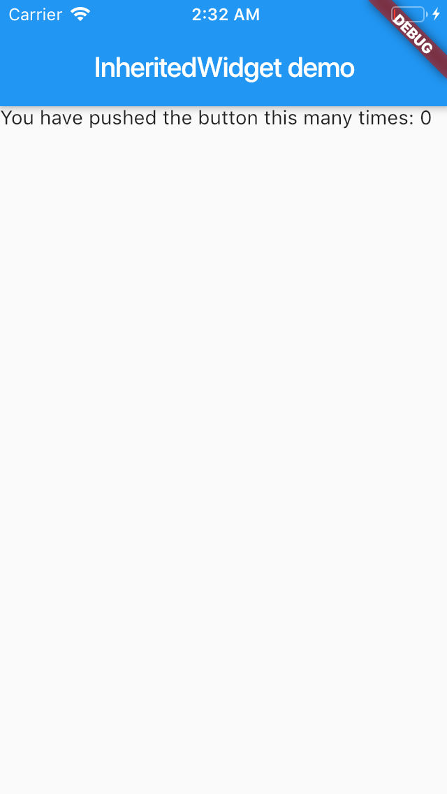
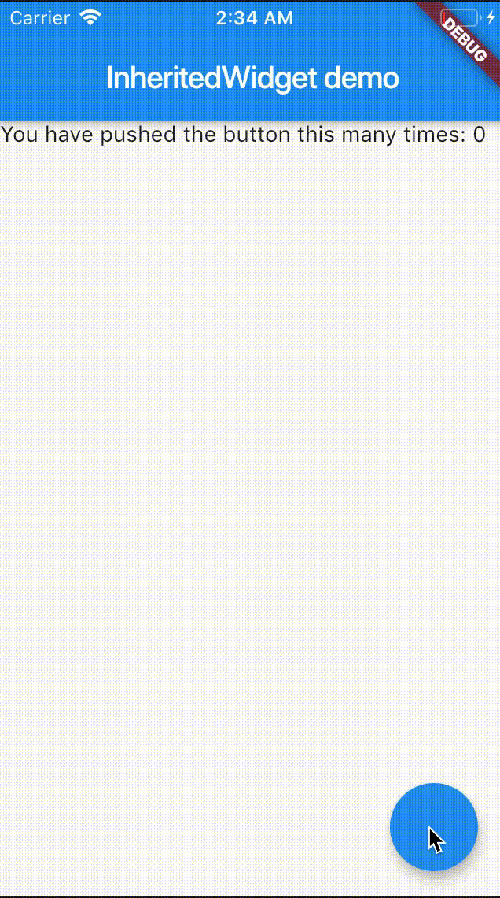
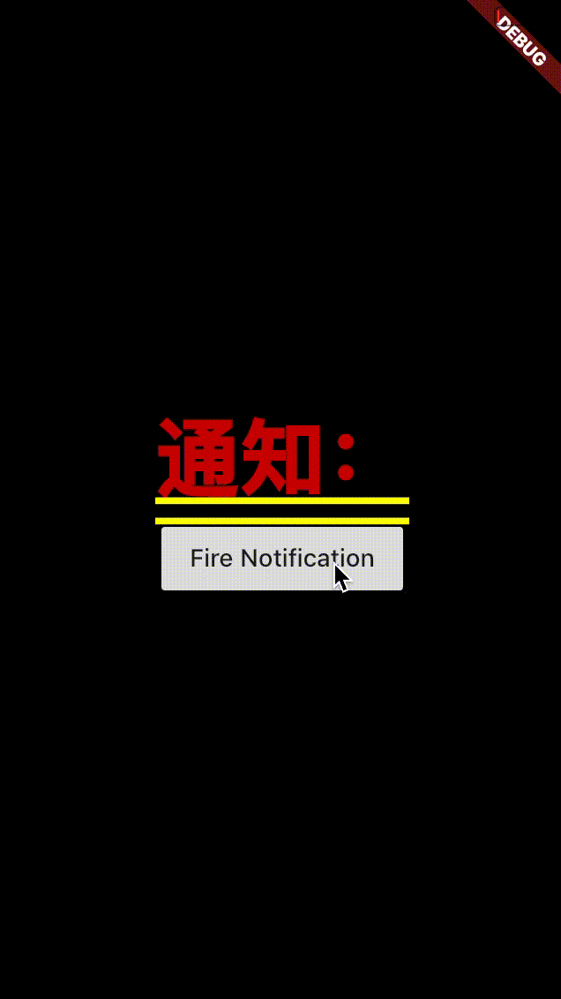
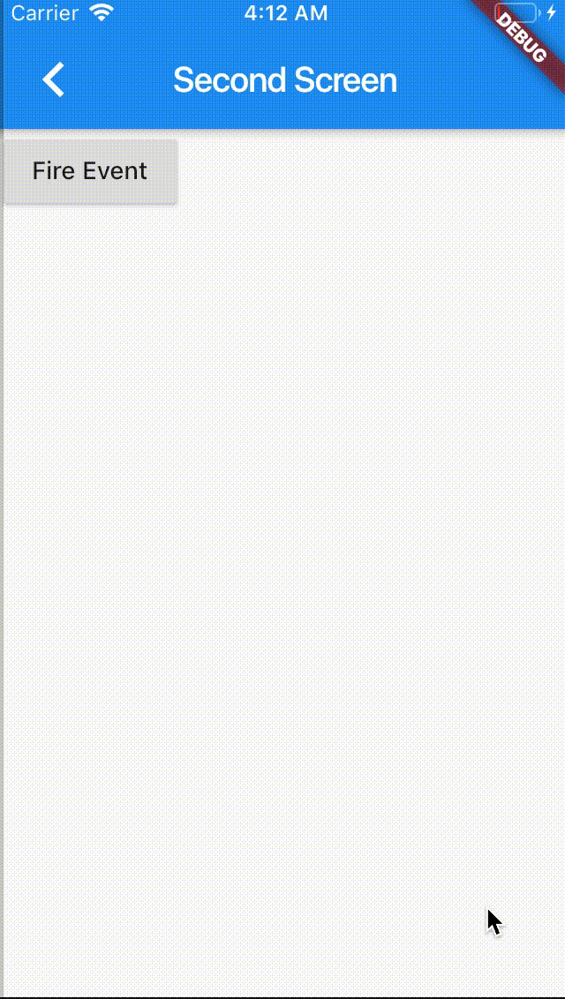
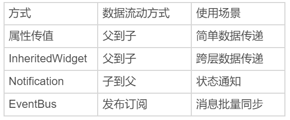

- 00 开篇词 为什么每一位大前端从业者都应该学习Flutter？.md
- 01 预习篇 · 从0开始搭建Flutter工程环境.md
- 02 预习篇 · Dart语言概览.md
- 03 深入理解跨平台方案的历史发展逻辑.md
- 04 Flutter区别于其他方案的关键技术是什么？.md
- 05 从标准模板入手，体会Flutter代码是如何运行在原生系统上的.md
- 06 基础语法与类型变量：Dart是如何表示信息的？.md
- 07 函数、类与运算符：Dart是如何处理信息的？.md
- 08 综合案例：掌握Dart核心特性.md
- 09 Widget，构建Flutter界面的基石.md
- 10 Widget中的State到底是什么？.md
- 11 提到生命周期，我们是在说什么？.md
- 12 经典控件（一）：文本、图片和按钮在Flutter中怎么用？.md
- 13 经典控件（二）：UITableView_ListView在Flutter中是什么？.md
- 14 经典布局：如何定义子控件在父容器中排版的位置？.md
- 15 组合与自绘，我该选用何种方式自定义Widget？.md
- 16 从夜间模式说起，如何定制不同风格的App主题？.md
- 17 依赖管理（一）：图片、配置和字体在Flutter中怎么用？.md
- 18 依赖管理（二）：第三方组件库在Flutter中要如何管理？.md
- 19 用户交互事件该如何响应？.md
- 20 关于跨组件传递数据，你只需要记住这三招.md
- 21 路由与导航，Flutter是这样实现页面切换的.md
- 22 如何构造炫酷的动画效果？.md
- 23 单线程模型怎么保证UI运行流畅？.md
- 24 HTTP网络编程与JSON解析.md
- 25 本地存储与数据库的使用和优化.md
- 26 如何在Dart层兼容Android_iOS平台特定实现？（一）.md
- 27 如何在Dart层兼容Android_iOS平台特定实现？（二）.md
- 28 如何在原生应用中混编Flutter工程？.md
- 29 混合开发，该用何种方案管理导航栈？.md
- 30 为什么需要做状态管理，怎么做？.md
- 31 如何实现原生推送能力？.md
- 32 适配国际化，除了多语言我们还需要注意什么_.md
- 33 如何适配不同分辨率的手机屏幕？.md
- 34 如何理解Flutter的编译模式？.md
- 35 Hot Reload是怎么做到的？.md
- 36 如何通过工具链优化开发调试效率？.md
- 37 如何检测并优化Flutter App的整体性能表现？.md
- 38 如何通过自动化测试提高交付质量？.md
- 39 线上出现问题，该如何做好异常捕获与信息采集？.md
- 40 衡量Flutter App线上质量，我们需要关注这三个指标.md
- 41 组件化和平台化，该如何组织合理稳定的Flutter工程结构？.md
- 42 如何构建高效的Flutter App打包发布环境？.md
- 43 如何构建自己的Flutter混合开发框架（一）？.md
- 44 如何构建自己的Flutter混合开发框架（二）？.md
- 特别放送 温故而知新，与你说说专栏的那些思考题.md
- 结束语 勿畏难，勿轻略.md
20 关于跨组件传递数据，你只需要记住这三招
你好，我是陈航。
在上一篇文章中，我带你一起学习了在Flutter中如何响应用户交互事件（手势）。手势处理在Flutter中分为两种：原始的指针事件处理和高级的手势识别。
其中，指针事件以冒泡机制分发，通过Listener完成监听；而手势识别则通过Gesture处理。但需要注意的是，虽然Flutter可以同时支持多个手势（包括一个Widget监听多个手势，或是多个Widget监听同一个手势），但最终只会有一个Widget的手势能够响应用户行为。为了改变这一点，我们需要自定义手势，修改手势竞技场对于多手势优先级判断的默认行为。
除了需要响应外部的事件之外，UI框架的另一个重要任务是，处理好各个组件之间的数据同步关系。尤其对于Flutter这样大量依靠组合Widget的行为来实现用户界面的框架来说，如何确保数据的改变能够映射到最终的视觉效果上就显得更为重要。所以，在今天这篇文章中，我就与你介绍在Flutter中如何进行跨组件数据传递。
在之前的分享中，通过组合嵌套的方式，利用数据对基础Widget的样式进行视觉属性定制，我们已经实现了多种界面布局。所以，你应该已经体会到了，在Flutter中实现跨组件数据传递的标准方式是通过属性传值。
但是，对于稍微复杂一点的、尤其视图层级比较深的UI样式，一个属性可能需要跨越很多层才能传递给子组件，这种传递方式就会导致中间很多并不需要这个属性的组件也需要接收其子Widget的数据，不仅繁琐而且冗余。
所以，对于数据的跨层传递，Flutter还提供了三种方案：InheritedWidget、Notification和EventBus。接下来，我将依次为你讲解这三种方案。
InheritedWidget
InheritedWidget是Flutter中的一个功能型Widget，适用于在Widget树中共享数据的场景。通过它，我们可以高效地将数据在Widget树中进行跨层传递。
在前面的第16篇文章“从夜间模式说起，如何定制不同风格的App主题？”中，我与你介绍了如何通过Theme去访问当前界面的样式风格，从而进行样式复用的例子，比如Theme.of(context).primaryColor。
Theme类是通过InheritedWidget实现的典型案例。在子Widget中通过Theme.of方法找到上层Theme的Widget，获取到其属性的同时，建立子Widget和上层父Widget的观察者关系，当上层父Widget属性修改的时候，子Widget也会触发更新。
接下来，我就以Flutter工程模板中的计数器为例，与你说明InheritedWidget的使用方法。
- 首先，为了使用InheritedWidget，我们定义了一个继承自它的新类CountContainer。
- 然后，我们将计数器状态count属性放到CountContainer中，并提供了一个of方法方便其子Widget在Widget树中找到它。
- 最后，我们重写了updateShouldNotify方法，这个方法会在Flutter判断InheritedWidget是否需要重建，从而通知下层观察者组件更新数据时被调用到。在这里，我们直接判断count是否相等即可。
class CountContainer extends InheritedWidget {
//方便其子Widget在Widget树中找到它
static CountContainer of(BuildContext context) => context.inheritFromWidgetOfExactType(CountContainer) as CountContainer;
final int count;
CountContainer({
Key key,
@required this.count,
@required Widget child,
}): super(key: key, child: child);
// 判断是否需要更新
@override
bool updateShouldNotify(CountContainer oldWidget) => count != oldWidget.count;
}
然后，我们使用CountContainer作为根节点，并用0初始化count。随后在其子Widget Counter中，我们通过InheritedCountContainer.of方法找到它，获取计数状态count并展示：
class _MyHomePageState extends State<MyHomePage> {
@override
Widget build(BuildContext context) {
//将CountContainer作为根节点，并使用0作为初始化count
return CountContainer(
count: 0,
child: Counter()
);
}
}
class Counter extends StatelessWidget {
@override
Widget build(BuildContext context) {
//获取InheritedWidget节点
CountContainer state = CountContainer.of(context);
return Scaffold(
appBar: AppBar(title: Text("InheritedWidget demo")),
body: Text(
'You have pushed the button this many times: ${state.count}',
),
);
}
运行一下，效果如下图所示：

图1 InheritedWidget使用方法
可以看到InheritedWidget的使用方法还是比较简单的，无论Counter在CountContainer下层什么位置，都能获取到其父Widget的计数属性count，再也不用手动传递属性了。
不过，InheritedWidget仅提供了数据读的能力，如果我们想要修改它的数据，则需要把它和StatefulWidget中的State配套使用。我们需要把InheritedWidget中的数据和相关的数据修改方法，全部移到StatefulWidget中的State上，而InheritedWidget只需要保留对它们的引用。
我们对上面的代码稍加修改，删掉CountContainer中持有的count属性，增加对数据持有者State，以及数据修改方法的引用：
class CountContainer extends InheritedWidget {
...
final _MyHomePageState model;//直接使用MyHomePage中的State获取数据
final Function() increment;
CountContainer({
Key key,
@required this.model,
@required this.increment,
@required Widget child,
}): super(key: key, child: child);
...
}
然后，我们将count数据和其对应的修改方法放在了State中，仍然使用CountContainer作为根节点，完成了数据和修改方法的初始化。
在其子Widget Counter中，我们还是通过InheritedCountContainer.of方法找到它，将计数状态count与UI展示同步，将按钮的点击事件与数据修改同步：
class _MyHomePageState extends State<MyHomePage> {
int count = 0;
void _incrementCounter() => setState(() {count++;});//修改计数器
@override
Widget build(BuildContext context) {
return CountContainer(
model: this,//将自身作为model交给CountContainer
increment: _incrementCounter,//提供修改数据的方法
child:Counter()
);
}
}
class Counter extends StatelessWidget {
@override
Widget build(BuildContext context) {
//获取InheritedWidget节点
CountContainer state = CountContainer.of(context);
return Scaffold(
...
body: Text(
'You have pushed the button this many times: ${state.model.count}', //关联数据读方法
),
floatingActionButton: FloatingActionButton(onPressed: state.increment), //关联数据修改方法
);
}
}
运行一下，可以看到，我们已经实现InheritedWidget数据的读写了。

图2 InheritedWidget数据修改示例
Notification
Notification是Flutter中进行跨层数据共享的另一个重要的机制。如果说InheritedWidget的数据流动方式是从父Widget到子Widget逐层传递，那Notificaiton则恰恰相反，数据流动方式是从子Widget向上传递至父Widget。这样的数据传递机制适用于子Widget状态变更，发送通知上报的场景。
在前面的第13篇文章“经典控件（二）：UITableView/ListView在Flutter中是什么？”中，我与你介绍了ScrollNotification的使用方法：ListView在滚动时会分发通知，我们可以在上层使用NotificationListener监听ScrollNotification，根据其状态做出相应的处理。
自定义通知的监听与ScrollNotification并无不同，而如果想要实现自定义通知，我们首先需要继承Notification类。Notification类提供了dispatch方法，可以让我们沿着context对应的Element节点树向上逐层发送通知。
接下来，我们一起看一个具体的案例吧。在下面的代码中，我们自定义了一个通知和子Widget。子Widget是一个按钮，在点击时会发送通知：
class CustomNotification extends Notification {
CustomNotification(this.msg);
final String msg;
}
//抽离出一个子Widget用来发通知
class CustomChild extends StatelessWidget {
@override
Widget build(BuildContext context) {
return RaisedButton(
//按钮点击时分发通知
onPressed: () => CustomNotification("Hi").dispatch(context),
child: Text("Fire Notification"),
);
}
}
而在子Widget的父Widget中，我们监听了这个通知，一旦收到通知，就会触发界面刷新，展示收到的通知信息：
class _MyHomePageState extends State<MyHomePage> {
String _msg = "通知：";
@override
Widget build(BuildContext context) {
//监听通知
return NotificationListener<CustomNotification>(
onNotification: (notification) {
setState(() {_msg += notification.msg+" ";});//收到子Widget通知，更新msg
},
child:Column(
mainAxisAlignment: MainAxisAlignment.center,
children: <Widget>[Text(_msg),CustomChild()],//将子Widget加入到视图树中
)
);
}
}
运行一下代码，可以看到，我们每次点击按钮之后，界面上都会出现最新的通知信息：

图3 自定义Notification
EventBus
无论是InheritedWidget还是Notificaiton，它们的使用场景都需要依靠Widget树，也就意味着只能在有父子关系的Widget之间进行数据共享。但是，组件间数据传递还有一种常见场景：这些组件间不存在父子关系。这时，事件总线EventBus就登场了。
事件总线是在Flutter中实现跨组件通信的机制。它遵循发布/订阅模式，允许订阅者订阅事件，当发布者触发事件时，订阅者和发布者之间可以通过事件进行交互。发布者和订阅者之间无需有父子关系，甚至非Widget对象也可以发布/订阅。这些特点与其他平台的事件总线机制是类似的。
接下来，我们通过一个跨页面通信的例子，来看一下事件总线的具体使用方法。需要注意的是，EventBus是一个第三方插件，因此我们需要在pubspec.yaml文件中声明它：
dependencies:
event_bus: 1.1.0
EventBus的使用方式灵活，可以支持任意对象的传递。所以在这里，我们传输数据的载体就选择了一个有字符串属性的自定义事件类CustomEvent：
class CustomEvent {
String msg;
CustomEvent(this.msg);
}
然后，我们定义了一个全局的eventBus对象，并在第一个页面监听了CustomEvent事件，一旦收到事件，就会刷新UI。需要注意的是，千万别忘了在State被销毁时清理掉事件注册，否则你会发现State永远被EventBus持有着，无法释放，从而造成内存泄漏：
//建立公共的event bus
EventBus eventBus = new EventBus();
//第一个页面
class _FirstScreenState extends State<FirstScreen> {
String msg = "通知：";
StreamSubscription subscription;
@override
initState() {
//监听CustomEvent事件，刷新UI
subscription = eventBus.on<CustomEvent>().listen((event) {
setState(() {msg+= event.msg;});//更新msg
});
super.initState();
}
dispose() {
subscription.cancel();//State销毁时，清理注册
super.dispose();
}
@override
Widget build(BuildContext context) {
return new Scaffold(
body:Text(msg),
...
);
}
}
最后，我们在第二个页面以按钮点击回调的方式，触发了CustomEvent事件：
class SecondScreen extends StatelessWidget {
@override
Widget build(BuildContext context) {
return new Scaffold(
...
body: RaisedButton(
child: Text('Fire Event'),
// 触发CustomEvent事件
onPressed: ()=> eventBus.fire(CustomEvent("hello"))
),
);
}
}
运行一下，多点击几下第二个页面的按钮，然后返回查看第一个页面上的消息：

图4 EventBus示例
可以看到，EventBus的使用方法还是比较简单的，使用限制也相对最少。
这里我准备了一张表格，把属性传值、InheritedWidget、Notification与EventBus这四种数据共享方式的特点和使用场景做了简单总结，供你参考：

图5 属性传值、InheritedWidget、Notification与EventBus数据传递方式对比
总结
好了，今天的分享就到这里。我们来简单回顾下在Flutter中，如何实现跨组件的数据共享。
首先，我们认识了InheritedWidget。对于视图层级比较深的UI样式，直接通过属性传值的方式会导致很多中间层增加冗余属性，而使用InheritedWidget可以实现子Widget跨层共享父Widget的属性。需要注意的是，InheritedWidget中的属性在子Widget中只能读，如果有修改的场景，我们需要把它和StatefulWidget中的State配套使用。
然后，我们学习了Notification，这种由下到上传递数据的跨层共享机制。我们可以使用NotificationListener，在父Widget监听来自子Widget的事件。
最后，我与你介绍了EventBus，这种无需发布者与订阅者之间存在父子关系的数据同步机制。
我把今天分享所涉及到的三种跨组件的数据共享方式demo放到了GitHub，你可以下载下来自己运行，体会它们之间的共同点和差异。
思考题
最后，我来给你留下一个思考题吧。
请你分别概括属性传值、InheritedWidget、Notification与EventBus的优缺点。
欢迎你在评论区给我留言分享你的观点，我会在下一篇文章中等待你！感谢你的收听，也欢迎你把这篇文章分享给更多的朋友一起阅读。
© 2019 - 2023 Liangliang Lee. Powered by gin and hexo-theme-book.